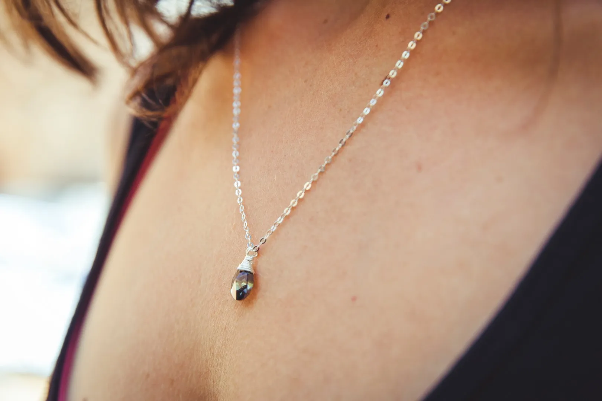

Collections

The Maker
I have been making jewelry since I was twelve, and I have never really stopped. Each piece is handmade in beautiful, historic Jerusalem — crocheted with fine metallic threads and a colour combination that is never quite repeated.
It is where I find my calm, and how I get to share a little colour with appreciative customers all over the world. No two pieces sit the same way twice — and that is exactly the point.
New & Loved
Stay in touch
A quiet note when a new collection comes off the workbench. No noise, just colour.